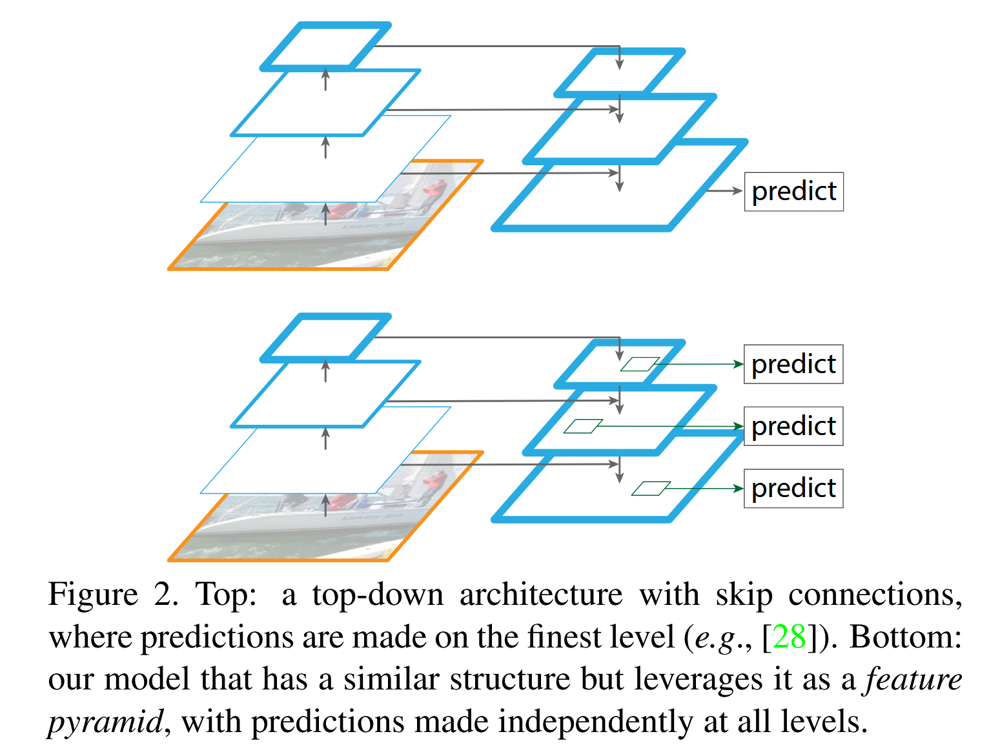

《Feature Pyramid Networks for Object Detection》阅读笔记
简介
多尺度目标识别是 CV 方面的难题，FPN
的提出是为了解决这个问题的。早期的目标检测系统实现多尺度用的是图像金字塔分别提取特征，成本太高，所以很多深度学习目标检测网络都避免使用它。Faster
R-CNN
这种网络预先设定多尺度锚框，但是因为单层特征图的特性损失了多尺度信息。
FPN
是一种横向连接的自顶向下架构，利用了深层卷积网络的多尺度、金字塔层级结构构建特征金字塔，用于构建所有尺度下的高特征特征图。
特征信息越丰富，看到的细节就越多。深层的卷积层因为经过很多的卷积和池化，感受野大，所以看到的东西更加“宏观”，相应地就可能导致了细节的丢失。
背景
处理多尺度信息，在图像金字塔中提取特征，构成特征金字塔是基本而传统的做法。金字塔赋予模型尺度不变性，而且所有层次都有强特征性。
但是这种做法太慢了。所以 Faster R-CNN 就用单尺度特征图快速检测。
还有另外一种做法是用卷积神经网络内部的各个特征层次直接预测，例如 SSD。
卷积网络的浅层分辨率高，细节强，语义信息弱；深层分辨率低，细节弱，语义信息强。
SSD 处理小物体时，可能在深层网络中因为分辨率低而丢失特征。为了避免使用特征信息弱的部分，它从高层特征开始构建金字塔再额外增加几个新的层。既增加成本又浪费了浅层的计算结果。
由上，FPN
的目标就是充分利用卷积网的层次结构创建特征金字塔，并且保证在所有尺度下的特征都具有强特征。那我们就要取长补短，把低分辨率强特征和高分辨率弱特征结合起来。
FPN 的网络结构示意如下。

其中左边的 Top
结构仅仅在最高分辨率层（最底层的、宏观的层面）预测。右边的 Bottom
结构（FPN 采取的结构）把它改造成了“特征金字塔”，每一层都会做出预测。
实现
卷积网络的特性是由浅到深细节递减语义递增。FPN
需要构建一个含有高级语义的特征金字塔。
这个特征金字塔网络对于所有卷积网络都是通用的。本文研究重点是以 RPN
为代表的滑动窗口区域建议和以 Fast R-CNN 为代表的目标检测。
-
自底向上
卷积网络中的一部分层会输出同一个 size 的输出，我们规定它们为同一个 stage。
我们取同一个 stage 的最后一层的输出作为特征提取的层（很明显计算越多特征越显著）
实验中第一个 stage 的不取，因为经过降采样太少，内存占用太大。 -
自顶向下
从低分辨率高语义的特征图开始，将它的空间分辨率上采样提升 2 倍（使用最近邻上采样）。然后将它和相应的自底向上特征图通过如图的形式相加合并。

应用
FPN 在深度卷积神经网络中构建特征金字塔是通用的方法。论文在 RPN 和 Fast R-CNN 上面做了示范。
RPN
将 RPN 生成单一尺度特征图的部分替换成 FPN 来适配
RPN，在特征金字塔的每一层的头部附加 3×3 卷积和两个并行的 1×1
卷积（这些头部的参数要共享），这样就可以替代 RPN
的多尺度锚框的处理。在每一个层级上面分别固定定义锚框的面积，如论文在{P2, P3, P4, P5, P6}上分别定义锚框的面积为{32², 64², 128², 256²,
512²}像素。然而多种宽高比还是需要的。论文用了{1:2, 1:1, 2:1}三种。
根据 IoU 分配训练标签。规则和 Faster R-CNN
中的一模一样。但是我们不根据真实框的尺度把真实框分配到金字塔中，而是和各个层级（代表各个尺度）的锚框关联。
Fast R-CNN
前面提到这个网络上使用 RoI 池化提取特征的。普通的 Fast R-CNN
是在单一尺度的特征图上面跑的。
为了结合 FPN，需要把不同尺度的 RoI 分配到金字塔的不同层级。
将宽度为、高度为的 RoI 分配到特征金字塔层级的公式为：
224 是 ImageNet 的预训练图像的尺寸。是希望将的 RoI 映射到的目标层级。论文参考 Faster R-CNN，将作为单一尺度的特征图，所以令。
在这个公式下，RoI
尺度越小，映射到的层级越高（需要更高分辨率的层级的特征）。
所有层级的 RoI
上都附加上预测头部，头部的参数仍然是共享的，作为分类器和框回归器。